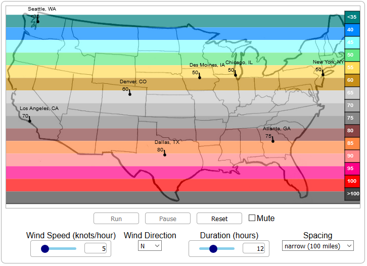
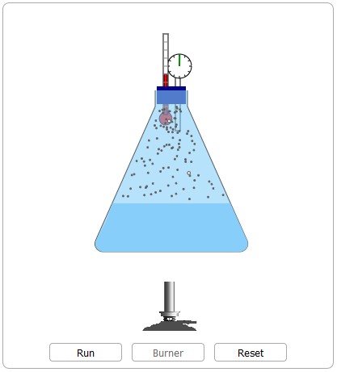
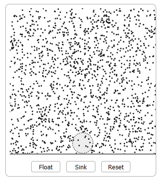

You can use the following simulations to explore conditions relating to such challenging concepts as solar and terrestrial radiation, humidity variables, temperature lags and adiabatic processes. Each simulation is written in HTML5 and Javascript and will run in most modern browsers including mobile.
Concept:This activity allows the user to adjust the initial temperature and vapor pressure of a parcel, denoted by a leaf, to observe how saturation occurs as the parcel travels over the mountain. The challenge for the user is hypothesize how these parameters affect when (where) saturation occurs to identify the variety of paths to saturation.
 Demo
Demo
Concept:Users collect temperature profile data for day and night in an environment that differs only by surface conditions. This activity is intended to be a puzzle since users are not expected to have yet been exposed to course materials that explain the profile differences. The challenge for the users is to list both what makes sense and what doesn't.
 Demo
Demo
Concept:This activity challenges the users to hypothesize how input and output flows affect the water level in the tank over time. The input flow can be changed during predetermined time periods. The output flow is constant during the entire activity. The goal is for the user to construct rules that govern tank water level and are generally applicable to parameters other than water.
 Demo
Demo
Concept:This activity allows the user to modify the wind speed, direction, duration, isotherm spacing to observe the impact of these variables on advection and the temperature gradient moves.
 DemoConcept:This activity introduces the user to the process of condensation and evaporation in a beaker. Users can apply heat to watch the system reach equilibrium.
 DemoConcept:This activity introduces the user to parcels of air that rise and fall in the atmosphere as the result of heating and cooling.
 DemoConcept:DrawSim lets students draw a variety of symbols on weather maps. It is divided into three basic tools to let the student: